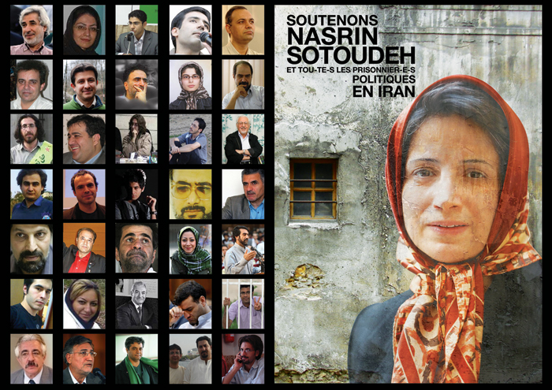

|
|
اعلام همبستگی شهر پاریس با تحصن فعالان حقوق زنان در برابر دفتر سازمان ملل در ژنو
جمعه3 دی 1389

سوده راد، پاریس
در غروب اولین روز زمستان 1389، چهارشنبه اول دیماه، بیش ازهفتاد نفر از ایرانیان و فرانسویان در همبستگی با تحصن فعالان جنبش زنان در برابر دفتر سازمان ملل در ژنو و برای آزادی بی قید و شرط همه ی زندانیان سیاسی و عقیدتی در ایران، در سالن کنفرانس ساختمان مرکزی شهرداری پاریس گرد هم آمدند.
«شهلا شفیق»، گرداننده ی این مراسم در ابتدای مراسم پس از تشکر از مهمانانی که با توجه به تعطیلات زمستانی و شرایط آب و هوایی نامناسب در آن شرکت کرده بودند، به این نکته اشاره کرد که شرایط غیر انسانی و فشار بی حد حکومت بر زندانیان سیاسی زن و مرد در ایران موجب شد تا این حرکت بدون پیش بینی قبلی صورت گیرد. زندانیانی که از حقوق بشر پایه ای خود محروم شده اند و نسرین ستوده که سمبل این زندانیان است، کسی است که به دلیل دفاع از حقوق بشر محبوس است و شرایط سختی دارد. این که یک وکیل به بهانه ی دفاع از وکلای خود در زندان باشد، خود گویای وضعیت غیر قابل قبول است و سرکوب شدید سیاسی را یادآوری می کند.
خانم «فاتیما لالم»، مشاور شهردار پاریس برای برابری حقوق زنان و مردان که همواره از مبارزات زنان ایرانی حمایت کرده است، اولین سخنران رسمی این همایش بود. ایشان خبر داد که شهردار پاریس بیانیه ای صادر خواهد کرد، شخصاً از این همایش پشتیبانی نموده و به ظلمی که بر مدافعان حقوق بشر، چون شیرین عبادی و نسرین ستوده می رود اعتراض کرده و صدور احکامی ناعادلانه و غیر ممکن برای هنرمندانی چون جعفر پناهی و مانع شدن از خروج خانم سیمین بهبانی از ایران را نشانه ی دیگری از تصمیم جدی حکومت ایران به گسترش سکوت و خفقان دانست. خانم لالم، یادآوری کرد که جنبش زنان ایرانی برای آزادی و برابری، مبارزه ای بین المللی است، ولی مبارزه در چنین شرایط سختی با گرو گذاشتن جان خود در این کشور، تحسین برانگیز است و مبارزان ایرانی باید بدانند که زنان و مردان فرانسوی همواره در کنار آنها خواهند بود.
سپس «رضا معینی»، مسوول بخش ایران و افغانستان سازمان گزارشگران بدون مرز با یادآوری این واقعیت تلخ که ایران، هم اکنون بزرگترین زندان روزنامه نگاران در جهان است، ادامه داد که از 22 خرداد 1389 تا کنون، 240 روزنامه نگار دستگیر و زندانی شده اند و امروز 38 نفر از آنها که دو نفرشان آلمانی هستند در زندان به سر می برند. در طول بیش از 300 دادگاهی که برای این عده برگزار شده است، آنها در مجموع به 500 سال زندان محکوم شده اند و جرم اکثر آنها نشر اکاذیب و اقدام علیه امنیت ملی بوده است. در ایران نه تنها آزادی بیان وجود ندارد، بلکه آزادی تفکر نیز سرکوب می شود. او به مواردی چون احکام خانم بنی یعقوب، آقای زیدآبادی، آقای باقی و آقای پناهی اشاره کرد ولی شرایط زندانیانی چون آقای نوری زاد، آقای باقی، آقای سحرخیز که حال جسمی بسیار بدی دارند و همچنین احکام زندان در تبعید و عدم فعالیت روزنامه نگاری نیازمند توجه ویژه ایست. او اشاره کرد که نسرین ستوده که سالها از خبرنگاران و روزنامه نگاران ایرانی دفاع کرده است در مبارزه ی سازمان گزارشگران بدون مرز شریک است.
خانم «لادن برومند» از بنیاد برومند که در طول ده سال اخیر به ثبت و پی گیری خشونت های جمهوری اسلامی ایران با تأکید بر نقض حقوق بشر در طول سی سال اخیر پرداخته است، به پارادوکس دفاع از متهمان در چارچوب قوانین ایران اشاره کرد و زندانی و محکومیت وکلا را نتیجه ی ناگریز این تناقضات دانست. او به فشارهایی که سیستم قضایی برای گرفتن اعترافات دروغ ازمتهمان می آورند اشاره کرد و این که نسرین ستوده سعی در دفاع از حقیقت و واقعیت داشته است، خود تناقضی است که نظام قضایی برای توقف آن او را زندانی کرده است. ماشین قضایی ایران، حقیقت دروغی را تولید می کند و یادآوری این حقیقت دروغ به سران جمهوری اسلامی و افکار عمومی خارج از ایران بهترین کمکی ست که ما در خارج از کشور می توانیم انجام دهیم.
خانم «فرنگیس حبیبی» از انجمن گفتگو و دموکراسی در سخنان خود یادآوری کرد زنانی که امروز مقابل مقر سازمان ملل در ژنو تحصن کرده اند، خود روزی پشت میله های زندان بوده اند و اکنون، نسرین ستوده که روزی از آنها دفاع می کرد، خود زیر همان سقف زندان است. او به تلاش های نسرین ستوده برای آشنایی زندانیان سیاسی با حقوق خود در زندان اشاره کرد و این که امروز او برای دستیابی به حقوق اولیه ی خود، دست به اعتصاب غذا زده است و حاضر است جان خود را فدای راه خود کند. خانم حبیبی زندانی بودن و محکومیت نسرین ستوده را با شرایطی مقایسه کرد که هانری لکرک، امیل زولا یا ویکتور هوگو برای فعالیت ها یا انتشار مقالات و کتاب های خود، محکوم به زندان یا مجبور به اعتصاب غذا می شدند. آیا کسی این شرایط دور از ذهن را می پذیرد؟ این جای تأسف است که پرونده ی نسرین ستوده از جذابیت های مدیاتیکی برخوردار نیست که افکار عمومی را به حرکت وادارد.
خانم «آن شانترون» نماینده ی اتحادیه ی ملی برای حقوق زنان، همیاری و همدلی این اتحادیه را در دفاع از نسرین ستوده اعلام کرد. او همچنین مراتب تحسین این اتحادیه را برای زنان و مردانی که برای دفاع از حقوق بشر شبانه روز تلاش می کنند و تا پای جان پیش می روند اظهار داشت و ابراز امیدواری کرد که این مبارزات هرچه زودتر به نتیجه برسد.
خانم «آن ماری لیزین» سناتور سابق بلژیک، به نمایندگی از انجمن حقوق بین المللی زنان در این مراسم شرکت کرد. این انجمن که توسط «سیمون دو بوار» تأسیس شده است، فعالیت های خود را در چارچوب حقوق جهانی زنان ادامه می دهد. خانم لیزین به مکاتبات و فعالیت هایی که انجمنشان در مورد سکینه محمدی آشتیانی داشته است اشاره کرد و ادامه داد که این فعالیت ها برای نسرین ستوده هم انجام شده است و ادامه هم خواهد یافت. ایشان اضافه کردند که خانم پیلای، کمیسار عالی حقوق بشر در سازمان ملل، باید از پایمال شدن حقوق بشر و بخصوص زنان جلوگیری کند و این انجمن در تمام مراحل مبارزات برای احقاق حقوق زنان ایرانی در کنار ایرانیان تلاش می کند.
آقای «یاشار محتشم» از کمیته ی مستقل ضد سرکوب شهروندان ایرانی در پاریس، در سخنان خود، با اشاره دستگیری آقای فریبرز رییس دانا گفت: «ایران نه تنها زندان زنان، زندان خبرنگاران، زندان فعالین دانشجویی، زندان فعالین کارگری، زندان وکلا، زندان هنرمندان و زندان فعالان اقلیت های قومی مذهبی، بلکه زندان منتقدان اقتصادی هم هست.» آقای محتشم ادامه دادند زندان ها امروز خود محلی برای مبارزه شده است و اعتصاب غذای مهدیه گلرو و بهاره هدایت خود مبارزه ی دیگری ست که یک بار دیگر سردمداران حکومت اسلامی را سرگردان کرده است.
خانم «لیلین کاندل»، جامعه شناس فرانسوی که سالها در جنبش های فمینیستی فرانسوی تلاش کرده است، در سخنرانی تأثیر گذار خود به مبارزه ی زنان ایرانی در طول سی سال اخیر اشاره کرد و بر تأثیر مستقیم کنش ها و واکنش های حکومت اسلامی ایران و فعالان جنبش زنان برای دفاع از حقوق زنان اشاره کرد. خانم کاندل ادامه دادند که نه تنها به عنوان یک فمینیست، بلکه به عنوان زنی که در اروپا زندگی می کند که در آن حقوق برابر زنان و مردان به رسمیت شناخته شده، اظهار داشت که به اهمیت مبارزات زنان ایرانی واقف است و معتقد است که این مبارزات بر زندگی زنان در کشورهای اروپایی و سایر کشورها هم تأثیر گذار است، چرا که پیروزی این جنبش، شکست استبداد دینی را بشارت می دهد. ایشان که عضو هیأت تحریریه ی مجله ی «عصر نو» - که به همراهی سیمون دوبوار و ژان پل سارتر تأسیس شده است- است، نوید داد که در شماره ی آینده ی خود به تفصیل در مورد ایران صحبت خواهد شد.
آقای «بهمن امینی» مدیر انتشارات خاوران که آثار بسیاری از نویسندگان در تبعید به همت او منتشر شده است، در سخنرانی خود تأکید کرد که اولین کتاب هایی که با مشکلات زیاد در تبعید منتشر شده است، خاطرات زندان بوده است، چرا که زندانها، آینه ی جامعه هستند. جنبش اخیر نوید حرکتی جهانی برای پیشرفت به سوی حقوق جهانی می دهد و باید با تمام وجود از آن حمایت کرد تا هرچه زودتر به روز روشن آزادی برسیم.
خانم «تالیا برتون» از شبکه ی جسارت فمینیست بودن، که شبکه ای متشکل از فمینیست های جوان است، در سخنان خود علاوه بر اعلام همیاری با جنبش زنان ایران به این موضوع اشاره کرد که آنچه که حضار را در این مکان گرد هم آورده است، احساس خشم و هتک حرمت است. خشم نسبت به حکومتی که هر روز حقوق زنان را پایمال می کند و نه تنها زنان، بلکه مردان و کودکان نیز شامل این ظلم و نا برابری می شوند و کسانی چون نسرین ستوده که از این حقوق دفاع می کنند، این چنین محکوم و زندانی می شوند. ایشان به نقش همیاری و همکاری جنبش های فمینیستی در کشورهای مختلف اشاره کرد و بر اهمیت حمایت کشورهای میزبان از کنشگران برابری خواهی که مجبور به ترک کشورشان شده اند و در این راه تا پای جان مبارزه می کنند تأکید کرد و آن را وظیفه دانست.
خانم «سوده راد»، عضو کمپین یک ملیون امضا شاخه ی پاریس، که در فرانسه با این شبکه نیز همکاری می کند، پس از ترجمه ی سخنان خانم بروتون، اضافه کرد: «وقتی از کشوری می آیید که هر روز در آن اتفاقات ناگوار می افتد، جایی برای اولویت بندی نمی ماند و تنها با تکیه بر احساسات و تجربه های شخصی می توان یکی از محورهای مبارزه را انتخاب کرد و این محور برای من و بسیاری دیگر، برابری خواهی بوده است، که موجب نمی شود نسبت به سایر اتفاقات بی تفاوت باشیم.»
خانم «ایران انصاری»، نماینده ی لیگ زنان ایرانی برای دموکراسی با اشاره به نکاتی که سخنرانان پیشین به آنها اشاره کرده بودند، سخن گفتن را در مورد شرایط نسرین ستوده بسیار دشوار دانست و شجاعت و جسارت این زن را که دست به اعتصاب غذا می زند، در حالی که می داند ممکن است جانش را از دست بدهد، ناشی از ایمان قوی او به راهش دانست که هیچ چیز نمی تواند سد راهش شود. خانم انصاری به شرایط بسیار بد زندانیان بیمار و حق بهره گیری از خدمات درمانی آنها که پایمال می شود اشاره کرد و اعتصاب غذای مهدیه گلرو و بهاره هدایت را اعتراضی به نقض حقوق اولیه ی زندانی، چون ممنوع الملاقات شدن آنها، دانست.
خانم «به آفرید جنتی عطایی» که پیش تر گزیده ای از نامه ی بهاره هدایت به مناسبت 16 آذر را به زبان فرانسه و فارسی اجرا کرده بود که حضار را تحت تأثیر قرار داد، خلاصه ای از سخنان بهاره هدایت را در پیام ویدیویی که برای دانشجویان اروپایی فرستاده شده بود، به زبان فرانسوی ارائه داد و سپس به نمایندگی از جنبش برای ایران، به شرایط فشار و سرکوب وکلا در ایران اشاره کرد. خانم جنتی عطایی علاوه بر شرایط خانم ستوده، شرایط آقای مصطفایی که مجبور به ترک ایران شد و همچنین وکیل دیگر خانم آشتیانی که او هم در زندان است را تنها نمونه هایی از سرکوب وکلا دانست که هنرمندان نیز از آن مستثنا نیستند و احکام آقای پناهی و رسول اف باز نمونه هایی دیگر است.
پس از پخش فیلم کوتاهی از تحصن در ژنو، قطعنامه ی پایانی تحصن به فارسی و فرانسوی خوانده شد و در پایان خانم شهلا شفیق به حمایت احزاب مختلف فرانسه، چون حزب سوسیالیست، حزب کمونیست ، حزب سبز اشاره نمودند و از تمامی شرکت کنندگان و برگزار کنندگان سپاسگزاری کردند.
تمامی سحنرانی ها به دو زبان فرانسوی و فارسی ترجمه شدند. این نشست به دعوت انجمن های ایرانی چون انتشارات خاوران، انجمن گفتگو و دموکراسی، جنبش برای ایران، کمپین یک میلیون امضا شاخه ی پاریس، کمیته مستقل ضد سرکوب شهروندان ایرانی در پاریس، شبکه ی بین المللی همبستگی با مبارزه ی زنان ایران شاخه ی پاریس، و لیگ زنان ایرانی برای دموکراسی و گروه های فرانسوی چون اتحادیه انجمنهای فرانسوی برای دفاع از حقوق زنان، انجمن حقوق بین المللی زنان، جسارت فمینیست بودن، هماهنگی برای دفاع از حق پیشگیری و خاتمه ی داوطلبانه به بارداری و شبکه ی فمینیستی گسست برگزار شد.